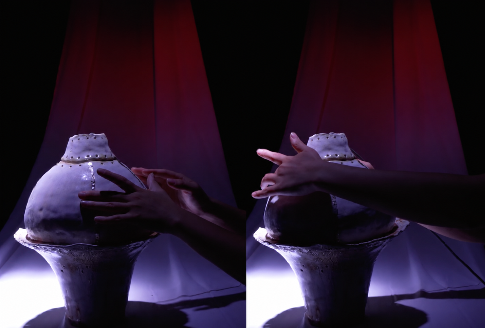

Tactone
Investigating ceramic form as an interface for bodily exploration and electronic sound.
Research Question
How can the physical form of an electronic instrument shape the gestures through which people discover and play it?
Tactone explores this question through a ceramic vessel with five conductive contacts. Touching each contact produces a synthesized note, while a designated sequence changes the waveform. The project connects ceramic making with physical computing to investigate how an instrument’s shape and responses can guide exploration.
Material and Interaction
I coil-built the vessel, glazed and fired it, then applied five copper-tape contacts to its surface. Soldered connections link the contacts to ESP32 touch pins, with the board housed inside the vessel.
The ceramic provides the structure and surface of the instrument; the copper contacts provide the sensing points. Together, they create an interface in which the placement of sound is physical. Each note occupies a location, and moving between notes requires the hand to travel around the vessel.
This makes form an interaction variable. Curvature, reach, and the distance between contacts could influence which movements feel accessible and which combinations someone discovers. The current vessel provides a first configuration through which to examine those relationships.
Learning Through Sound
The five contacts correspond to do, re, mi, fa, and so. A designated touch sequence changes the synthesized waveform, including transitions between sine and sawtooth tones.
This creates two levels of interaction: an individual touch produces a note, while a sequence changes how subsequent notes sound. The instrument offers a way to investigate how people learn through audible feedback—connecting a location to a pitch, then recognizing that the order of their actions can alter the system.
Touching the conductive contacts produces synthesized notes; a designated sequence changes the waveform.
Current Outcome and Further Inquiry
Tactone establishes a working touch-to-sound prototype. Its research potential lies in examining the relationship between the vessel’s geometry, the arrangement of its contacts, and the gestures used to play it.
A next iteration could compare alternative contact arrangements and vessel forms. Observing where people first touch, how they move between notes, and whether they discover the waveform change would help identify which aspects of the interface support exploration and which require explanation.
The broader aim is to understand how the material and spatial qualities of a handcrafted object can participate in the design of an electronic instrument.